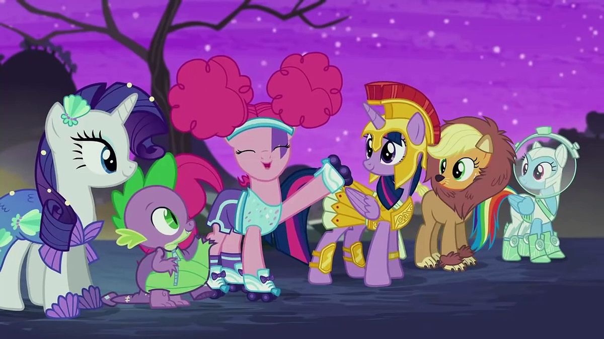
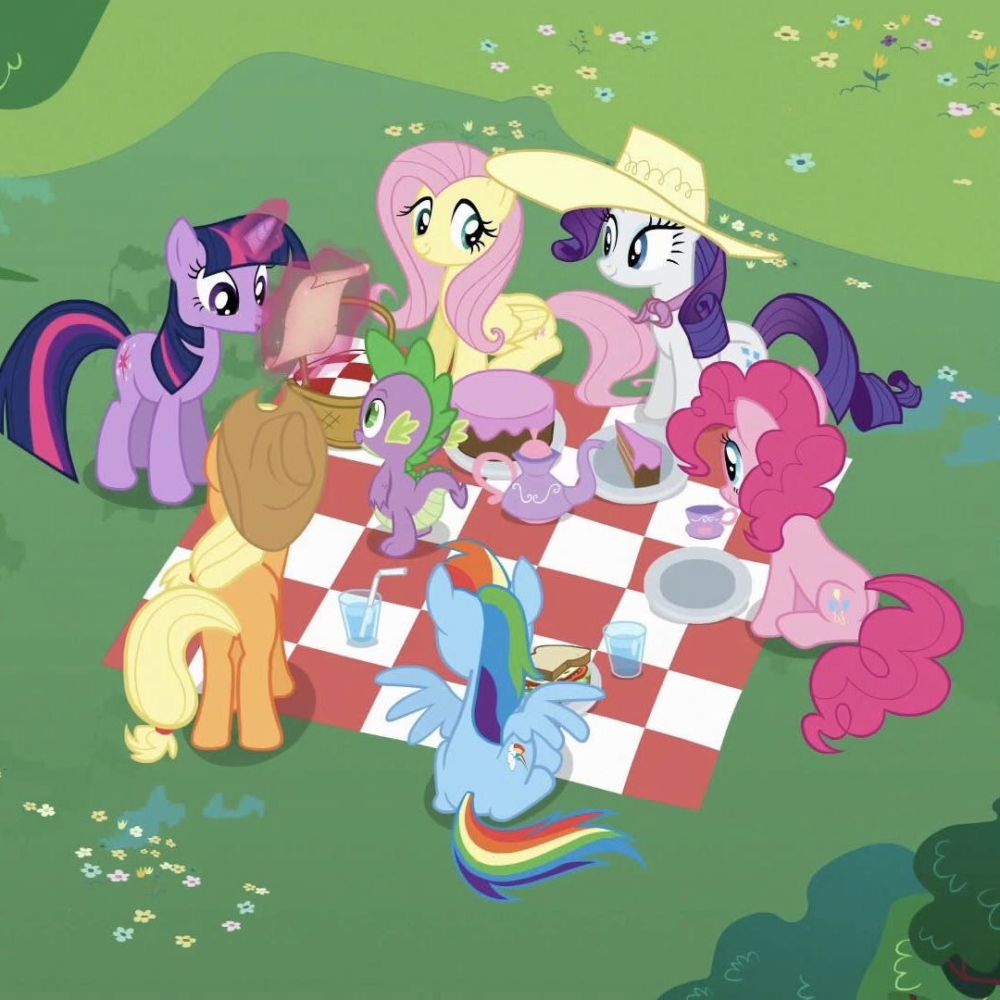

О мультсериале «Мой маленький пони»
Раздел 1. Общие сведения
«My Little Pony: Friendship Is Magic» создала Лорен Фауст по мотивам игрушек компании Hasbro. Премьера состоялась в 2010 году, всего вышло 9 сезонов.
- Создание сериала
- Выход в эфир
- Завершение после 9 сезона

Раздел 2. Главные героини
- Twilight Sparkle
- Rainbow Dash
- Pinkie Pie
- Rarity
- Applejack
- Fluttershy

Раздел 3. Темы сериала
- Дружба
- Взаимопомощь
- Доверие
- Ценности
- Честность
- Щедрость